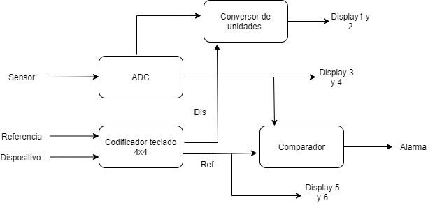
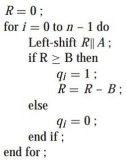
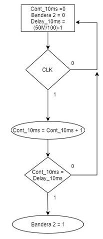

Primer avance. Sistemas digitales programables. Universidad Autonoma de Occidente. 2021.
Análisis de la entradas y salidas del sistema.
| Entradas | Salidas |
|---|---|
| ClK | MEDIDA (Lx,W) |
| RESET | ALARMA |
| LUX | REFERENCIA |
| COLUMNA | - |
Diagrama de Bloques.

Seudocódigo de la Función Principal y de Funciones intermedias que fueron necesario construir.
Seudocódigo de funcion Principal
| Entradas | Salidas |
|---|---|
| ClK | MEDIDA (Lx,W) |
| RESET | ALARMA |
| LUX | REFERENCIA (Lx) |
| COLUMNA | - |
Entidad
LIBRARY ieee;
USE ieee.std_logic_1164.ALL;
USE ieee.numeric_std.ALL;
ENTITY PRINCIPAL IS
PORT (
clk, reset: STD_LOGIC_VECTOR
lux : IN real RANGE NVDC TO PVDC;
columna : IN STD_LOGIC_VECTOR(3 DOWNTO 0);
medida, referencia : OUT STD_LOGIC_VECTOR(7 DOWNTO 0);
alarma : BIT;
);
END ENTITY;
Posible codificación
ARCHITECTURE OF PRINCIPAL IS
VARIABLE EficienciaLuminica, CambiarReferencia, Equivalencia : BIT;
VARIABLE EficienciaLuminosa, watt : STD_LOGIC_VECTOR;
VARIABLE TecladoCount, N : INTEGER;
ADC := ConversorADC real(lux, dlux);
Referencia:
--CambiarReferencia es la activacion de la letra A
process (CambiarReferencia, columna, clk_1Hz)
IF (CambiarReferencia == 1 && TecladoCount <3) THEN
IF (clk_1Hz 'Event And clk_1Hz = '1') THEN
TecladoCount := TecladoCount + 1;
N := 3-TecladoCount;
NuevaReferencia(N) := funcion(tecla);
END IF;
ELSE
CambiarReferencia := 0;
TecladoCount := 0;
END IF;
end process Referencia;
EficienciaLuminica:
--EficienciaLuminica es la activacion de la letra B
IF(EficienciaLuminica == '1') THEN
EficienciaLuminosa := '1011010' --Led
ELSE
EficienciaLuminosa := '10100' --Halógena
END IF;
Equivalente: CalcularWatt port map (dlux,EficienciaLuminosa, watt)
Mostrar:
process (Equivalencia, watt)
IF (Equivalencia == '1') THEN
medida <= dlux;
ELSE
medida <= watt;
END IF
end process Mostrar;
Alarmar:
process (dlux)
IF (dlux >= referencia) THEN
alarma <= '1';
ELSE
alarma <= '0';
END IF
end process Alarmar;
END original;
Seudocódigo de funcion ADC
Relacion de datos iniciales
| Entradas | Salidas |
|---|---|
| Analogico | Digital |
Entidad
LIBRARY ieee;
USE ieee.std_logic_1164.ALL;
USE ieee.numeric_std.ALL;
ENTITY ADC_8_bit IS
PORT (
analog_in : IN real RANGE NVDC TO PVDC;
digital_out : OUT STD_LOGIC_VECTOR(7 DOWNTO 0)
);
END ENTITY;
Posible codificación
ARCHITECTURE original OF ADC_8_bit IS
CONSTANT conversion_time : TIME := 25 ns; -- Muestreo
-- Estados
SIGNAL instantly_digitized_signal : STD_LOGIC_VECTOR(7 DOWNTO 0);
SIGNAL delayed_digitized_signal : STD_LOGIC_VECTOR(7 DOWNTO 0);
-- Funcion de conversion
FUNCTION ADC_8b_10v_bipolar (
analog_in : real RANGE NVDC TO PVDC
) RETURN STD_LOGIC_VECTOR IS
CONSTANT max_abs_digital_value : INTEGER := 128;
VARIABLE analog_signal : real;
VARIABLE digitized_signal : INTEGER;
VARIABLE digital_out : STD_LOGIC_VECTOR(7 DOWNTO 0);
BEGIN
analog_signal := real(analog_in);
IF (analog_signal < 0.0) THEN -- i/p = -ve
digitized_signal := INTEGER(analog_signal * 12.8); - escalamos
IF (digitized_signal <- (max_abs_digital_value)) THEN
digitized_signal := - (max_abs_digital_value);
END IF;
ELSE -- i/p = +ve
digitized_signal := INTEGER(analog_signal * 12.8); - escalamos
IF (digitized_signal > (max_abs_digital_value - 1)) THEN
digitized_signal := max_abs_digital_value - 1; -- Complemento A1
END IF;
END IF;
digital_out := STD_LOGIC_VECTOR(to_signed(digitized_signal, digital_out'length));
RETURN digital_out;
END ADC_8b_10v_bipolar;
BEGIN
END original;
Seudocódigo de funcion Teclado
| Entradas | Salidas |
|---|---|
| Columnas | Digito |
| Filas | - |
Tabla de funcionamiento
| TECLA PRESIONADA | TECLA_PRES |
|---|---|
| 0 | x"0" |
| 1 | x"1" |
| 2 | x"2" |
| 3 | x"3" |
| 4 | x"4" |
| 5 | x"5" |
| 6 | x"6" |
| 7 | x"7" |
| 8 | x"8" |
| 9 | x"9" |
| A | x"A" |
| B | x"B" |
| C | x"C" |
| D | x"D" |
| * | x"E" |
| # | x"F" |
Posible codificación
library IEEE;
use IEEE.STD_LOGIC_1164.ALL;
entity TECLADO_MATRICIAL is
PORT(
CLK : IN STD_LOGIC; --RELOJ FPGA
COLUMNAS : IN STD_LOGIC_VECTOR(3 DOWNTO 0); --PUERTO CONECTADO A LAS COLUMNAS DEL TECLADO
FILAS : OUT STD_LOGIC_VECTOR(3 DOWNTO 0); --PUERTO CONECTADO A LA FILAS DEL TECLADO
BOTON_PRES : OUT STD_LOGIC_VECTOR(3 DOWNTO 0); --PUERTO QUE INDICA LA TECLA QUE SE PRESIONA
IND : OUT STD_LOGIC --BANDERA QUE INDICA CUANDO SE PRESIONA UNA TECLA (SOLO DURA UN CICLO DE RELOJ)
);
end TECLADO_MATRICIAL;
architecture Behavioral of TECLADO_MATRICIAL is
CONSTANT DELAY_1MS : INTEGER := 49999; --(FREQ_CLK/1000)-1
CONSTANT DELAY_10MS : INTEGER := 499999; -- (FREQ_CLK/100)-1
SIGNAL CONTA_1MS : INTEGER RANGE 0 TO DELAY_1MS := 0;
SIGNAL BANDERA : STD_LOGIC := '0';
SIGNAL CONTA_10MS : INTEGER RANGE 0 TO DELAY_10MS := 0;
SIGNAL BANDERA2 : STD_LOGIC := '0';
SIGNAL FILA_REG_S : STD_LOGIC_VECTOR(3 DOWNTO 0) := (OTHERS=>'0');
SIGNAL FILA : INTEGER RANGE 1 TO 4 := 1;
SIGNAL IND_S : STD_LOGIC := '0';
SIGNAL EDO : INTEGER RANGE 0 TO 1 := 0;
begin
FILAS <= FILA_REG_S;
--RETARDO 1 MS--
PROCESS(CLK)
BEGIN
IF RISING_EDGE(CLK) THEN
CONTA_1MS <= CONTA_1MS+1;
BANDERA <= '0';
IF CONTA_1MS = DELAY_1MS THEN
CONTA_1MS <= 0;
BANDERA <= '1';
END IF;
END IF;
END PROCESS;
----------------
--RETARDO 10 MS--
PROCESS(CLK)
BEGIN
IF RISING_EDGE(CLK) THEN
CONTA_10MS <= CONTA_10MS+1;
BANDERA2 <= '0';
IF CONTA_10MS = DELAY_10MS THEN
CONTA_10MS <= 0;
BANDERA2 <= '1';
END IF;
END IF;
END PROCESS;
----------------
--PROCESO QUE ACTIVA CADA FILA CADA 10ms--
PROCESS(CLK, BANDERA2)
BEGIN
IF RISING_EDGE(CLK) AND BANDERA2 = '1' THEN
FILA <= FILA+1;
IF FILA = 4 THEN
FILA <= 1;
END IF;
END IF;
END PROCESS;
WITH FILA SELECT
FILA_REG_S <= "1000" WHEN 1,
"0100" WHEN 2,
"0010" WHEN 3,
"0001" WHEN OTHERS;
-------------------------------
PROCESS(CLK,BANDERA)
IF RISING_EDGE(CLK) AND BANDERA = '1' THEN
IF FILA_REG_S = "1000" THEN --PRIMERA FILA DE BOTONES
if columnas = "1000" then BOTON_PRES <= X"1"; IND_S <= '1'; end if;
if columnas = "0100" then BOTON_PRES <= X"2"; IND_S <= '1'; end if;
if columnas = "0010" then BOTON_PRES <= X"3"; IND_S <= '1'; end if;
if columnas = "0001" then BOTON_PRES <= X"A"; IND_S <= '1'; end if;
ELSIF FILA_REG_S = "0100" THEN --SEGUNDA FILA DE BOTONES
if columnas = "1000" then BOTON_PRES <= X"4"; IND_S <= '1'; end if;
if columnas = "0100" then BOTON_PRES <= X"5"; IND_S <= '1'; end if;
if columnas = "0010" then BOTON_PRES <= X"6"; IND_S <= '1'; end if;
if columnas = "0001" then BOTON_PRES <= X"B"; IND_S <= '1'; end if;
ELSIF FILA_REG_S = "0010" THEN --TERCERA FILA DE BOTONES
if columnas = "1000" then BOTON_PRES <= X"7"; IND_S <= '1'; end if;
if columnas = "0100" then BOTON_PRES <= X"8"; IND_S <= '1'; end if;
if columnas = "0010" then BOTON_PRES <= X"9"; IND_S <= '1'; end if;
if columnas = "0001" then BOTON_PRES <= X"C"; IND_S <= '1'; end if;
ELSIF FILA_REG_S = "0001" THEN --CUARTA FILA DE BOTONES
if columnas = "1000" then BOTON_PRES <= X"E"; IND_S <= '1'; end if;
if columnas = "0100" then BOTON_PRES <= X"0"; IND_S <= '1'; end if;
if columnas = "0010" then BOTON_PRES <= X"F"; IND_S <= '1'; end if;
if columnas = "0001" then BOTON_PRES <= X"D"; IND_S <= '1'; end if;
END IF;
END IF;
END PROCESS;
end Behavioral;
Seudocódigo de funcion CalcularWatt
| Entradas | Salidas |
|---|---|
| Lux | Watt |
| Eficiencia luminosa | - |

Cartas ASM de la Función Principal y de Funciones intermedias
Carta ASM Funcion Principal
graph TB
subgraph Principal
*((Inicio))
*--Datos por defecto-->DF
DF(equivalente = 0 <br/> lux = 0 <br/> efl = 0 )
DF-->CLK
CLK{{clk}}
CLK--Recibir datos-->data
data[/lux<br>columna/]
subgraph Funcion ADC, Teclado
CLK
data
end
data-->C
data-->Ref
data-->EfL
C{Mostrar <br> medida <br> equivalente <br> <br> eq=1}
C -->|Si| D[Medida en Watt]
C -->|No| E[Medida en Lux]
subgraph Funcion Calcular Watt
D
end
D --> #
E --> #
Ref{Cambiar referencia <br> ref=1}
Ref-->|Si| DPB
DPB[display en simbolo <br/> -]
DPB --> NRf
NRf[Nueva referencia]
NRf-->#
Ref-->|No| #
EfL{Eficiencia luminosa <br/> efl=1}
EfL -->|Si| F[Para <br/> luz led]
EfL -->|No| G[Para <br/> luz Halógena]
F-->#
G-->#
#((FIN))
end
Cartas ASM Funcion ADC
graph TB
subgraph ADC
*((Inicio))
#((FIN))
SA[/Señal analoga/]
analog_signal{Señal analoga < 0}
CSTDL[Convesor a STD Logic]
* --Recibir dato--> SA
SA --> analog_signal
analog_signal -- Si --> SD1[Señal digital = Señal analoga * 12.8]
analog_signal -- No --> SD2[Señal digital = Señal analoga * 12.8]
SD1 --> CA1[Complemento A1]
SD2 --> CSTDL
CA1 --> CSTDL
CSTDL --> #
end
Cartas ASM Funcion Teclado
Diagrama para Bandera

Diagrama para Bandera 2

Diagrama para Fila.

Diagrama para activar fila.

Carta ASM activacion de filas

Diagrama para salida.

Cartas ASM Funcion CalcularWatt